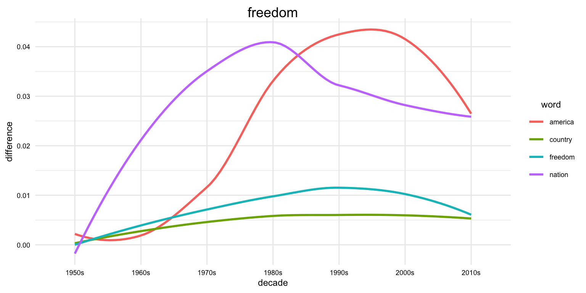
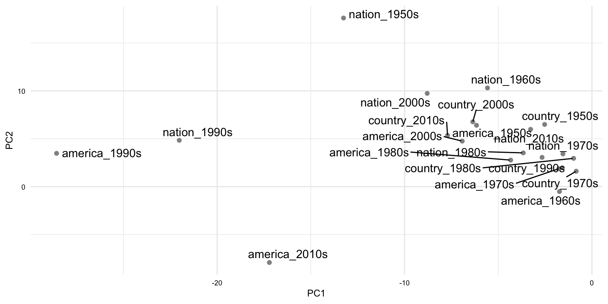

Overview
Exploratory analysis is a wide-ranging term that encompasses many different methods. In this recipe, we will focus on the methods that are most commonly used in the analysis of textual data. These include frequency and distributional analysis, clustering, and word embedding models.
The approach to exploratory analysis is highly iterative. The process is not linear, but rather a cycle of the steps in Table 1. This cycle is repeated until the research question(s) have been addressed.
| Step | Name | Description |
|---|---|---|
| 1 | Identify | Consider the research question and identify variables of potential interest to provide insight into our question. |
| 2 | Inspect | Check for missing data, outliers, etc. and check data distributions and transform if necessary. |
| 3 | Interrogate | Submit the selected variables to descriptive or unsupervised learning methods to provide quantitative measures to evaluate. |
| 4 | Interpret | Evaluate the results and determine if they are valid and meaningful to respond to the research question. |
We will model how to explore iteratively using the output of one method to inform the next and ultimately to address the research question. For this reason, the subsequent sections of this recipe are grouped by research question rather than by approach step or method.
Let's get started by loading some of the packages we will likely use.
library(dplyr) # for data manipulation
library(stringr) # for string manipulation
library(tidyr) # for data tidying
library(tidytext) # for text analysis
library(ggplot2) # for data visualizationIn Lab 8, we will try our hand at exploratory analysis using another dataset.
Concepts and strategies
Orientation
We will use the SOTU corpus to demonstrate the different methods. We will select a subset of the corpus (post-1945) and explore the question:
- How has the language of the SOTU changed over time?
This will include methods such as frequency and distributional analysis, dimensionality reduction, and word embedding models.
Let's look at the first few rows of the data to get a sense of what we have.
sotu_df# # A tibble: 73 × 4
# president year party address
# <chr> <dbl> <chr> <chr>
# 1 Truman 1947 Democratic "Mr. President, Mr. Speaker, Members of the Cong…
# 2 Truman 1948 Democratic "Mr. President, Mr. Speaker, and Members of the …
# 3 Truman 1949 Democratic "Mr. President, Mr. Speaker, Members of the Cong…
# 4 Truman 1950 Democratic "Mr. President, Mr. Speaker, Members of the Cong…
# 5 Truman 1951 Democratic "Mr. President, Mr. Speaker, Members of the Cong…
# 6 Truman 1952 Democratic "Mr. President, Mr. Speaker, Members of the Cong…
# 7 Eisenhower 1953 Republican "Mr. President, Mr. Speaker, Members of the Eigh…
# 8 Eisenhower 1954 Republican "Mr. President, Mr. Speaker, Members of the Eigh…
# 9 Eisenhower 1955 Republican "Mr. President, Mr. Speaker, Members of the Cong…
# 10 Eisenhower 1956 Republican "My Fellow Citizens: This morning I sent to the …
# # ℹ 63 more rowsWe can see that the dataset contains the president, year, party, and address for each SOTU address.
Now let's view a statistical overview summary of the data by using the skim() function.
skimr::skim(sotu_df)# ── Data Summary ────────────────────────
# Values
# Name sotu_df
# Number of rows 73
# Number of columns 4
# _______________________
# Column type frequency:
# character 3
# numeric 1
# ________________________
# Group variables None
#
# ── Variable type: character ────────────────────────────────────────────────────
# skim_variable n_missing complete_rate min max empty n_unique whitespace
# 1 president 0 1 4 10 0 12 0
# 2 party 0 1 10 10 0 2 0
# 3 address 0 1 6160 51947 0 73 0
#
# ── Variable type: numeric ──────────────────────────────────────────────────────
# skim_variable n_missing complete_rate mean sd p0 p25 p50 p75 p100
# 1 year 0 1 1984. 21.6 1947 1965 1984 2002 2020
# hist
# 1 ▇▇▇▇▇We can see that the dataset contains 73 rows --corresponding to the number of SOTU addresses. Looking at missing values, we can see that there are no missing values for any of the variables. Taking a closer look at each variable, the president variable is a character vector with 12 unique presidents. There are two unique parties and 73 unique addresses. The year variable is numeric with a minimum value of 1947 and a maximum value of 2020, therefore the addresses include 73 years.
Identify
With a general sense of the data, we can now move on to the first step in the exploratory analysis workflow: identifying variables of interest.
- What linguistic variables might be of interest to address this question?
Words might be the most obvious variable, but we might also be interested in other linguistic variables such as parts of speech, syntactic structures, or some combination of these.
Let's start with words. If we look at words, we might be interested in the frequency of words, the distribution of words, or the meaning of words. We might also be interested in the relationship between words. For example, we might be interested in the co-occurrence of words or the similarity of words. These, and more, are all possible approaches that we might consider.
Another consideration is if we want to do comparisons across time, across presidents, across parties, etc.. In our research question, we have already identified that we want to compare across time so that will be our focus. However, what we mean by "time" is not clear. Do we mean across years, across decades, across presidencies, etc.? We will need to make a decision about how we want to define time, but we can fold this into our exploratory analysis, as we will see below.
Let's posit the following sub-questions:
- What are the most frequent words across time periods?
- How does the distribution of words change across time periods?
- How does the meaning of words change across time periods?
We will use these sub-questions to guide our exploratory analysis.
Inspect
The next step is to inspect the data. We will transform the data as necessary to prepare it for analysis and then do some diagnostic checks to make sure that the data is ready for analysis.
Since we will be working with words, let's tokenize the addresses variable to extract the words and maintain a tidy dataset. We will use the unnest_tokens() function from the tidytext package to do this. Let's apply the function and assign the result to a new variable called sotu_words_df.
# Tokenize the words by year (with numbers removed)
sotu_words_df <-
sotu_df |>
unnest_tokens(word, address, strip_numeric = TRUE)Let's continue by looking at whether there is a relationship between the number of words and years. We can do this by using the count() function on the year variable. This will group and count the number of observations (words) per year as n.
We can then visualize this with a line plot where the x-axis is the year and the y-axis is the number of words n. I'll add the plot to a variable called p so that we can add layers to it.
# Get the number of words per year --------------------------------
p <-
sotu_words_df |>
count(year) |>
ggplot(aes(x = year, y = n)) +
geom_line()
# View
pFigure 1: Number of words per year
Tip
The count() function is a wrapper for the summarize() function. It is a convenient way to count the number of observations in a dataset.
# the output of
df |>
count(var1)
# is equivalent to
df |>
group_by(var1) |>
summarize(n = n()) |>
ungroup()The difference is that count() grouping is added and removed automatically. In other cases, we can mimic this behavior for other operations inside a summarize() or mutate() function by using the .by argument. For example:
We can see from Figure 1 that the number of words per year varies, sometimes quite a bit. To get a sense of the relationship between the number of words and the year, we can add a linear trend line to the plot. We can do this by adding the geom_smooth() function to the plot. We will set the method argument to "lm" to use a linear model.
p + geom_smooth(method = "lm")This plot shows that there is a positive relationship between the number of words and the year --that is the number of words increases over time. But the line is not a great fit and furthermore the angle of the line is more horizontal than vertical. This suggests that the relationship is not a strong one. We can confirm this by calculating the correlation between the number of words and the year. We can do this by using the cor.test() function on the year and n variables inside a summarize() function.
# Get the correlation between the number of words and the year ----
sotu_words_df |>
count(year) |>
summarize(cor = cor.test(year, n)$estimate)## # A tibble: 1 × 1
## cor
## <dbl>
## 1 0.342So, even though we are working to inspect our data, we already have a finding. The number of words increases over time, despite the fact that the relationship is not a strong one.
Now, let's turn our attention to the frequency of individual words. Let's start by looking at the most frequent words for the entire corpus. We can do this by grouping by the word variable and then summarizing the number of times each word occurs. We will then arrange the data in descending order by the number of times each word occurs.
# Get the most frequent words ------------------------------------
sotu_words_df |>
count(word, sort = TRUE) |>
slice_head(n = 10)## # A tibble: 10 × 2
## word n
## <chr> <int>
## 1 the 21565
## 2 and 14433
## 3 to 13679
## 4 of 13087
## 5 in 8116
## 6 we 7327
## 7 a 7137
## 8 our 6822
## 9 that 5391
## 10 for 4513The usual suspects are at the top of the list. This is not surprising, and will likely be the case for most corpora, and sizeable subcorpora --in our case the time periods. Let's address this.
We could use a stopwords list to just eliminate many of these common words, but that might be a bit too agressive and we will likely lose some words that we want to keep. Considering a more nuanced approach, we will use the \(tf\)-\(idf\) transformation to attenuate the effect of words that are common across all time periods, and on the flip side, to promote the effect of words that are more distinctive to each time period.
In order to do this, we will need to calculate the \(tf\)-\(idf\) for each word in each time period. To keep things simple, we will calculate the \(tf\)-\(idf\) for each word in each decade. We will do this by creating a new variable called decade that is the year rounded down to the nearest decade. Then we can group by this decade variable and then count the number of times each word occurs. We will then calculate the \(tf\)-\(idf\) for each word in each decade using the bind_tf_idf() function from the tidytext package. We will then arrange the data in descending order by the \(tf\)-\(idf\) value.
# Get the tf-idf of words by decade ------------------------------
sotu_words_tfidf_df <-
sotu_words_df |>
mutate(decade = floor(year / 10) * 10) |>
count(decade, word) |>
bind_tf_idf(word, decade, n) |>
arrange(decade, desc(tf_idf))
# Preview
sotu_words_tfidf_df## # A tibble: 40,073 × 6
## decade word n tf idf tf_idf
## <dbl> <chr> <int> <dbl> <dbl> <dbl>
## 1 1940 boycotts 5 0.000344 2.20 0.000756
## 2 1940 jurisdictional 7 0.000482 1.50 0.000725
## 3 1940 interpretation 4 0.000275 2.20 0.000605
## 4 1940 unjustified 4 0.000275 2.20 0.000605
## 5 1940 insecurity 5 0.000344 1.50 0.000518
## 6 1940 arbitration 3 0.000207 2.20 0.000454
## 7 1940 output 6 0.000413 1.10 0.000454
## 8 1940 unjustifiable 3 0.000207 2.20 0.000454
## 9 1940 management 25 0.00172 0.251 0.000433
## 10 1940 rental 4 0.000275 1.50 0.000414
## # ℹ 40,063 more rowsOK. Even the preview shows that we are getting a more interesting list of words.
Let's look at the top 10 words for each decade. We group by decade and then slice the top 10 words by \(tf\)-\(idf\) value with slice_max(). Then we will use the reorder_within() function from the tidytext package to reorder the words within each facet by the \(tf\)-\(idf\) value.
We will visualize this with a bar chart where word is on the x-axis and the height of the bar is the \(tf\)-\(idf\) value. We will also facet the plot by decade. I've flipped the coordinates so that the words are on the y-axis and the bars are horizontal. This is a personal preference, but I find it easier to read the words this way.
# Visualize the top 10 words by decade ---------------------------------
sotu_words_tfidf_df |>
group_by(decade) |>
slice_max(n = 10, tf_idf) |>
ungroup() |>
mutate(decade = as.character(decade)) |>
mutate(word = reorder_within(word, desc(tf_idf), decade)) |>
ggplot(aes(word, tf_idf, fill = decade)) +
geom_col() +
scale_x_reordered() +
facet_wrap(~decade, scales = "free") +
theme(legend.position = "none") +
coord_flip()Scanning the top words for the decades we can see some words that signal contemporary issues. This is a hint that we are picking up on some of the changes in the language of the SOTU over time.
Dive deeper
The plot above makes use of the reorder_within() and scale_x_reordered() functions from the tidytext package. These functions allow us to reorder the words within each facet by the \(tf\)-\(idf\) value. This is a nice way to visualize the most distinctive words for each decade. These are more advanced functions. If you are interested in learning more about them, you can read more about them in the help documentation ?tidytext::reorder_within
To my eye, however, the 1940s and the 2020s don't seem to jump out at me in the same way. Let's take a closer look at the 1940s and the 2020s in our original dataset.
sotu_df |>
filter(year < 1950 | year >= 2020)## # A tibble: 4 × 4
## president year party address
## <chr> <dbl> <chr> <chr>
## 1 Truman 1947 Democratic "Mr. President, Mr. Speaker, Members of the Congre…
## 2 Truman 1948 Democratic "Mr. President, Mr. Speaker, and Members of the 80…
## 3 Truman 1949 Democratic "Mr. President, Mr. Speaker, Members of the Congre…
## 4 Trump 2020 Republican "Madam Speaker, Mr. Vice President, Members of Con…Well, that explains it. There are only 3 addresses in the 1940s and 1 address in the 2020s. This is not enough data to get a good sense of the language of the SOTU for these decades. Let's remove these decades from our original dataset as not being representative of the language of the SOTU.
Another consideration that catches my eye in looking at the top words by decade is that our words like "communist" and "communists" are being counted separately. That is fine, but what if we want to count these as the same word? We can do this by lemmatizing the words --that is reducing the words to their root form. We can do this using the lemmatize_words() function from the textstem package.
So consider this example:
# Lemmatize the words --------------------------------------------
words_chr <- c("freedom", "free", "frees", "freeing", "freed")
textstem::lemmatize_words(words_chr)## [1] "freedom" "free" "free" "free" "free"Dive deeper
By default, the lemmatize_words() function uses a lookup table for English to lemmatize words. This is a simple approach that works well for many cases. However, it is not perfect. For example, it will not lemmatize words that are not in the lookup table.
If you want to lemmatize words that are not in the lookup table, or you want to lemmatize words in another language, you can create or add to a lookup table. You can read more about this in the help documentation ?textstem::lemmatize_words().
A resource for lemma lookup tables can be found here https://github.com/michmech/lemmatization-lists.
With these considerations in mind, let's update our sotu_df dataset to remove the 1940s and 2020s, tokenize and lemmatize the words, and add a decade variable.
# Update the dataset ----------------------------------------------
sotu_terms_df <-
sotu_df |>
filter(year >= 1950 & year < 2020) |> # Remove the 1940s and 2020s
unnest_tokens(word, address, strip_numeric = TRUE) |> # Tokenize the words
mutate(lemma = textstem::lemmatize_words(word)) |> # Lemmatize the words
mutate(decade = floor(year / 10) * 10) |> # Add a decade variable
select(president, decade, year, party, word, lemma) #
# Preview
sotu_terms_df## # A tibble: 368,586 × 6
## president decade year party word lemma
## <chr> <dbl> <dbl> <chr> <chr> <chr>
## 1 Truman 1950 1950 Democratic mr mr
## 2 Truman 1950 1950 Democratic president president
## 3 Truman 1950 1950 Democratic mr mr
## 4 Truman 1950 1950 Democratic speaker speaker
## 5 Truman 1950 1950 Democratic members member
## 6 Truman 1950 1950 Democratic of of
## 7 Truman 1950 1950 Democratic the the
## 8 Truman 1950 1950 Democratic congress congress
## 9 Truman 1950 1950 Democratic a a
## 10 Truman 1950 1950 Democratic year year
## # ℹ 368,576 more rowsThis inspection process could go on for a while. We could continue to inspect the data and make changes to the dataset but it is often the case that in the process of analysis we will often run into issues that require us to go back and make changes to the dataset. So we will move on to the next step in the exploratory analysis workflow.
Interrogate
Now that we have our data in a tidy format, we can move on to the next step in the exploratory analysis workflow: interrogating the data. We will submit the selected variables to descriptive or unsupervised learning methods to provide quantitative measures to evaluate.
Frequency
- What are the most frequent words across time periods?
We have already made some progress on this question in the inspection phase, but now we can do it again with the updated dataset.
# Get the most frequent lemmas by decade --------------------------
sotu_lemmas_tfidf_df <-
sotu_terms_df |>
count(decade, lemma) |> # Count the lemmas by decade
bind_tf_idf(lemma, decade, n) |> # Calculate the tf-idf
arrange(decade, desc(tf_idf))
# Preview
sotu_lemmas_tfidf_df## # A tibble: 26,435 × 6
## decade lemma n tf idf tf_idf
## <dbl> <chr> <int> <dbl> <dbl> <dbl>
## 1 1950 armament 16 0.000321 1.95 0.000625
## 2 1950 imperialism 9 0.000181 1.95 0.000351
## 3 1950 shall 107 0.00215 0.154 0.000331
## 4 1950 disarmament 13 0.000261 1.25 0.000327
## 5 1950 mineral 8 0.000160 1.95 0.000312
## 6 1950 mobilization 12 0.000241 1.25 0.000302
## 7 1950 survivor 12 0.000241 1.25 0.000302
## 8 1950 expenditure 42 0.000842 0.336 0.000283
## 9 1950 adequate 25 0.000501 0.560 0.000281
## 10 1950 constantly 11 0.000221 1.25 0.000276
## # ℹ 26,425 more rowsNow we can visualize the top 10 lemmas for each decade, as we did above, but for the lemmas instead of the words and for seven full decades.
# Visualize the top 10 lemmas by decade ---------------------------
sotu_lemmas_tfidf_df |>
group_by(decade) |>
slice_max(n = 10, tf_idf) |>
ungroup() |>
mutate(decade = as.character(decade)) |>
mutate(lemma = reorder_within(lemma, desc(tf_idf), decade)) |>
ggplot(aes(lemma, tf_idf, fill = decade)) +
geom_col() +
scale_x_reordered() +
facet_wrap(~decade, scales = "free") +
theme(legend.position = "none") +
coord_flip()Distribution
- How does the distribution of words change across time periods?
OK. Now let's focus on word frequency distributions over time. We will return to the sotu_terms_df.
sotu_terms_df## # A tibble: 368,586 × 6
## president decade year party word lemma
## <chr> <dbl> <dbl> <chr> <chr> <chr>
## 1 Truman 1950 1950 Democratic mr mr
## 2 Truman 1950 1950 Democratic president president
## 3 Truman 1950 1950 Democratic mr mr
## 4 Truman 1950 1950 Democratic speaker speaker
## 5 Truman 1950 1950 Democratic members member
## 6 Truman 1950 1950 Democratic of of
## 7 Truman 1950 1950 Democratic the the
## 8 Truman 1950 1950 Democratic congress congress
## 9 Truman 1950 1950 Democratic a a
## 10 Truman 1950 1950 Democratic year year
## # ℹ 368,576 more rowsWe want to get a sense of how the word distributions change over time. We need to calculate the frequency of words for each year, first off. So we need to go back to the sotu_terms_df dataset and group by year and word and then count the number of times each word occurs.
Since we will lose the lemma variable in this process, we will add it back after the \(tf\)-\(idf\) transformation by using the mutate() function and the textstem::lemmatize_words() function.
sotu_terms_tfidf_df <-
sotu_terms_df |>
count(year, word) |> # Count the words by year
bind_tf_idf(word, year, n) |> # Calculate the tf-idf
mutate(lemma = textstem::lemmatize_words(word)) |> # Lemmatize the words
arrange(year, desc(tf_idf))
# Preview
sotu_terms_tfidf_df## # A tibble: 97,213 × 7
## year word n tf idf tf_idf lemma
## <dbl> <chr> <int> <dbl> <dbl> <dbl> <chr>
## 1 1950 enjoyment 3 0.000585 3.54 0.00207 enjoyment
## 2 1950 rent 3 0.000585 2.85 0.00167 rend
## 3 1950 widespread 3 0.000585 2.85 0.00167 widespread
## 4 1950 underdeveloped 2 0.000390 4.23 0.00165 underdeveloped
## 5 1950 ideals 7 0.00136 1.14 0.00156 ideal
## 6 1950 transmit 3 0.000585 2.62 0.00153 transmit
## 7 1950 peoples 8 0.00156 0.976 0.00152 people
## 8 1950 democratic 12 0.00234 0.623 0.00146 democratic
## 9 1950 expenditures 7 0.00136 1.06 0.00144 expenditure
## 10 1950 businessmen 3 0.000585 2.44 0.00143 businessman
## # ℹ 97,203 more rowsWith this format, we can visualize the distinctiveness of words over time. All we need to do is to filter the data to the lemmas we are interested first.
Let's just start with some random poltical-oriented words.
plot_terms <- c("crime", "law", "free", "terror", "family", "government")
sotu_terms_tfidf_df |>
filter(lemma %in% plot_terms) |>
ggplot(aes(year, tf_idf)) +
geom_smooth(se = FALSE, span = 0.25) +
facet_wrap(~lemma, scales = "free_y")Figure 2: Distinctiveness of political words over time
We can see in Figure 2 that the distinctiveness of these lemmas varies over time. Now, in this plot I've used a small span value for the geom_smooth() function to get a sense of the more fine-grained changes over time. However, this is may be too fine-grained. We can adjust this by increasing the span value. Let's try a span value of 0.5.
sotu_terms_tfidf_df |>
filter(lemma %in% plot_terms) |>
ggplot(aes(year, tf_idf)) +
geom_smooth(se = FALSE, span = 0.5) +
facet_wrap(~lemma, scales = "free_y")Figure 3: Distinctiveness of political words over time
Figure 3 seems to be picking up on some of the more general word usage trends over time.
Another thing to note about the way we plotted the data is that we used the facet_wrap() function to create a separate plot for each word but we used the scales = "free_y" allowing the y-axis to vary for each plot. This means we are not comparing the y-axis values across plots and thus can not say anything about the differing magnitudes from a visual inspection.
To address this, we can remove the scales = "free_y" argument and use the default which will fix the x- and y-axis scales across plots.
sotu_terms_tfidf_df |>
filter(lemma %in% plot_terms) |>
ggplot(aes(year, tf_idf)) +
geom_smooth(se = FALSE, span = 0.5) +
facet_wrap(~lemma)Figure 4: Distinctiveness of political words over time
In Figure 4, we can clearly see that the magnitude of the words "crime" and "terror" are much higher than the other words we happend to select. Furthermore, these words have interesting patterns. In particular, "terror" has two peaks on around 1980 and another around the turn of the century. "Crime" also has two distinctive peaks on in the 1970s and one in the 1990s.
The terms that I selected before were somewhat arbitrary. How can I identify the words that have changed the most drastically over these years from the data itself? We can do this by creating a term-document matrix with and then calculating the standard deviation of the \(tf\)-\(idf\) values for each word. This will give us a sense of the words that have changed the most over time.
# Create TDM with words-year and tf-idf values
sotu_word_tfidf_mat <-
sotu_terms_tfidf_df |>
cast_tdm(word, year, tf_idf) |>
as.matrix()
# Preview
dim(sotu_word_tfidf_mat)## [1] 13109 69
sotu_word_tfidf_mat[1:5, 1:5]## Docs
## Terms 1950 1951 1952 1953 1954
## enjoyment 0.00207 0.00000 0.000661 0 0
## rent 0.00167 0.00000 0.000000 0 0
## widespread 0.00167 0.00000 0.000000 0 0
## underdeveloped 0.00165 0.00000 0.000000 0 0
## ideals 0.00156 0.00171 0.000853 0 0To calculate the standard deviation of the \(tf\)-\(idf\) values for each word, we can use the apply() function to iterate over each row of the matrix and calculate the standard deviation of the values in each row. You can think of the apply() function as a cousin of the map() function. The apply() function iterates over the rows or columns of a matrix or data frame and applies a function to each row or column. We choose whether the function is applied to the rows or columns with the MARGIN argument. We can set MARGIN = 1 to apply the function to the rows and MARGIN = 2 to apply the function to the columns.
# Calculate the standard deviation of the tf-idf values for each word
sotu_words_sd <-
apply(sotu_word_tfidf_mat, MARGIN = 1, FUN = sd, na.rm = TRUE)
# Preview seed words
sotu_words_sd |>
sort(decreasing = TRUE) |>
head(100)## vietnam hussein saddam salt iraq shall
## 0.001188 0.001138 0.001121 0.001067 0.000976 0.000887
## oil iraqi that's inspectors qaida terror
## 0.000798 0.000786 0.000733 0.000715 0.000702 0.000662
## terrorists it's crude soviet terrorist activity
## 0.000651 0.000647 0.000635 0.000633 0.000632 0.000630
## covenant arrangements session al disarmament steven
## 0.000611 0.000609 0.000596 0.000596 0.000589 0.000588
## wartime barrels isil mentioned ought elvin
## 0.000573 0.000569 0.000567 0.000559 0.000558 0.000556
## iraqis ryan we're kids let's gun
## 0.000551 0.000539 0.000539 0.000535 0.000533 0.000532
## rebekah cj camps empower cory we've
## 0.000531 0.000527 0.000524 0.000523 0.000522 0.000518
## 92d afghanistan childcare 100th music gulf
## 0.000516 0.000514 0.000513 0.000507 0.000500 0.000494
## 21st extremists foundation picture beguiled contemplate
## 0.000491 0.000489 0.000487 0.000486 0.000473 0.000473
## enumerate hurriedly hysterical ingredients smile smiles
## 0.000473 0.000473 0.000473 0.000473 0.000473 0.000473
## wagehour josefina shi'a alice alliance seventies
## 0.000473 0.000471 0.000468 0.000468 0.000467 0.000464
## herman joshua matthew julie 11th border
## 0.000463 0.000463 0.000463 0.000462 0.000461 0.000459
## persian recommend communist mayor nicaragua planes
## 0.000456 0.000453 0.000447 0.000443 0.000442 0.000442
## trevor corey kenton preston seong property
## 0.000440 0.000439 0.000439 0.000439 0.000439 0.000439
## regimes disarm mention peacetime localities objective
## 0.000437 0.000436 0.000436 0.000433 0.000429 0.000428
## i'm surtax banks pounds foster she
## 0.000424 0.000423 0.000423 0.000422 0.000421 0.000418
## isis sandinistas discharging gold
## 0.000417 0.000416 0.000416 0.000415Now we can choose from the top words that have changed the most over time. Here's another selection of words based on the standard deviation of the \(tf\)-\(idf\) values.
plot_terms <- c("equality", "right", "community", "child", "woman", "man")
sotu_terms_tfidf_df |>
filter(lemma %in% plot_terms) |>
ggplot(aes(year, tf_idf)) +
geom_smooth(se = FALSE, span = 0.5) +
geom_smooth(method = "lm") +
facet_wrap(~lemma)Figure 5: Distinctiveness of words over time
We can see that the words I selected based on the standard deviation can either increase, decrease, or fluctuate over time.
Meaning
- How does the meaning of words change across time periods?
For this approach we need to turn to word embeddings. Word embeddings have been show to capture distributional semantics --that is the meaning of words based on their distribution in a corpus (Hamilton, Leskovec, and Jurafsky 2016).
Since our research question is aimed a change over time we are performing a diachronic analysis. This means that we will need to create word embeddings for each time period, identify the common vocabulary across time periods, and then align the word embeddings to a common space before we can compare them.
Let's load some packages that we will need.
library(fs) # for file system functions
library(word2vec) # for training word embeddings
library(wordVectors) # for reading word embeddings
library(purrr) # for iterating over lists
library(PsychWordVec) # for aligning word embeddingsLet's first start by creating sub-corpora for each decade. We will write these to disk so that we can use them again if necessary. Note that data or datasets that are generated in the process of analysis are often stored in an analysis/ folder inside of the main data folder to keep them separate from the other data acquired or derived in the project.
We will use the str_c() function to summarize the words for each address into a single string by decade. We will then use the write_lines() function to write the string to a text file. The pwalk() function from the purrr package is a convenient way to iterate over multiple arguments (decade and address in this case) in a function without returning a value to the console. The p in pwalk() stands for "parallel" and indicates that the function will iterate over the arguments in parallel.
# Create sub-corpora for each decade and write to disk ------------
sotu_terms_df |>
summarize(address = str_c(lemma, collapse = " "), .by = decade) |>
select(decade, address) |>
pwalk(\(decade, address) {
file_name <- str_c("~/Desktop/sotu/", decade, "s.txt")
write_lines(address, file_name)
})Now I have written a function to read the text files, train the word embeddings for each, write the word embeddings to disk, and then load them back as VectorSpaceModel objects in a list.
Tip
A note on the training of the word embeddings. There are two main approaches to training word embeddings: Continuous Bag of Words (CBOW) and Skip-gram. CBOW is better for more common words and larger datasets. Skip-gram is better for less common words and smaller datasets. Given the varying sizes of the sub-corpora, Skip-gram might be more suitable as it may capture more nuances in less frequent words. Furthermore, the number of dimensions is a hyperparameter that needs to be tuned. The default is 50, but I have chosen 100 as we are attempting to capture more nuanced changes in the language of the SOTU.
# Create word embeddings for each decade --------------------------
read_write_load_word2vec <- function(path) {
txt_files <- dir_ls(path, regexp = "\\.txt$")
models <- txt_files |> map(\(x) {
model <- word2vec(x = x, split = c(" ", ".?!"))
bin_file <- str_replace(x, "\\.txt$", ".bin")
write.word2vec(model, bin_file)
read.vectors(bin_file)
})
names(models) <-
names(models) |>
basename() |>
str_remove("\\.txt")
return(models)
}
sotu_vec_mods <- read_write_load_word2vec("~/Desktop/sotu")Each word embedding model is a matrix with the words as the rows and the dimensions as the columns as an element of the sotu_vec_mods list. Each of these elements have the name of the decade. We can extract an element from a list using the pluck() function from the purrr package.
# Extract an element from a list
sotu_vec_mods |> pluck("1950s")## A VectorSpaceModel object of 1169 words and 100 vectors
## [,1] [,2] [,3] [,4] [,5] [,6]
## accept -1.2088 -0.1457 -0.692 -0.601 -0.1529 0.0303
## accomplishment -0.2089 0.4314 0.316 -0.262 -0.2113 -0.2715
## accumulate -0.7860 0.1292 -1.483 0.798 -0.5478 -0.7393
## allegiance -0.5152 -0.4702 -1.911 -1.250 -0.0963 1.3089
## appear -0.0158 -0.0553 -0.660 -0.408 0.1673 0.9228
## big -1.0551 -1.0780 -0.251 0.739 1.3601 -0.7780
## character -0.3861 -0.1448 -1.187 -1.671 -0.0968 0.3907
## city -0.1444 -0.8658 0.161 1.330 -1.4870 -0.5676
## compensation -0.4972 -0.5151 -0.195 1.069 -1.4240 0.3458
## competitive -0.2188 0.8441 -1.049 0.699 -0.0900 -0.5783
## attr(,".cache")
## <environment: 0x7fe31e174a68>Tip
Since we have our models in a list, we will be using purrr functions quite a bit. Here's a quick summary of some of the purrr functions we will be using.
-
map()iterates over a list and applies a function to each element of the list. It returns a list. -
walk()iterates over a list and applies a function to each element of the list. It does not return a value.
Each of these has a parallel version, pmap() and pwalk(), which iterate over multiple lists in parallel, and a version that iterates over named lists, imap() and iwalk(). The p in pmap() and pwalk() stands for "parallel" and indicates that the function will iterate over the arguments in parallel. The i in imap() and iwalk() stands for "indexed" and indicates that the function will iterate over the arguments in parallel and return the index of the list element.
These embeddings can be explored in a number of ways. For example, we can get the words closest to a given word in the vector space for each decade. The wordVectors package has a function, closest_to(), that will do this for us. We can use the map() function to iterate over each model in the list and get the closest words to a word. We will then use the str_c() function to summarize the words into a single string for each decade.
# Get the closest words
sotu_vec_mods |>
map(\(x) {
closest_to(x, "freedom", 10) # get the closest words to "freedom"
}) |>
map(\(x) {
str_c(x$word, collapse = ", ") # summarize the words into a single string
})## $`1950s`
## [1] "freedom, ideal, poverty, fundamental, collective, knowledge, above, servant, democracy, contribute"
##
## $`1960s`
## [1] "freedom, match, endure, quest, liberty, revolution, hand, pursuit, desire, vast"
##
## $`1970s`
## [1] "freedom, defend, destroy, militarily, determination, honor, commitment, democracy, trust, whole"
##
## $`1980s`
## [1] "freedom, fighter, everywhere, dare, liberty, democracy, march, lebanon, central, communist"
##
## $`1990s`
## [1] "freedom, blessing, peaceful, diverse, endeavor, abroad, voice, latin, continent, perfect"
##
## $`2000s`
## [1] "freedom, oppression, liberty, oppress, momentum, witness, ideal, spare, aim, peace"
##
## $`2010s`
## [1] "freedom, salute, soul, memory, celebrate, dignity, forget, sergeant, extraordinary, sacrifice"The previous example shows that the closest words to "freedom" in each decade in a synchronic manner. We can inspect these synchronic changes and draw conclusions from them. However, we are interested in diachronic changes. To do this, we will need to align the word embeddings to a common space.
Now we will identify the common words across the decades and subset the word embeddings to the common vocabulary. The map() function iterates over each model in the list and returns the rownames with rownames() (words) for each model. The reduce() function then iterates over the list of words and returns the intersection of the words across the models with intersect().
# Extract the common vocabulary -----------------------------------
common_vocab <-
sotu_vec_mods |>
map(rownames) |>
reduce(intersect)
length(common_vocab)## [1] 535
head(common_vocab)## [1] "city" "debate" "different" "everything" "happen"
## [6] "offer"There are 535 words in the common vocabulary. Now we can subset the word embeddings to the common vocabulary. We will use the map() function to iterate over each model in the list and subset the model to the common vocabulary using the common_vocab variable as part of the bracket notation subset.
# Subset the models to the common vocabulary ----------------------
sotu_vec_common_mods <-
sotu_vec_mods |>
map(\(x) {
x[common_vocab, ] # subset each model to the common vocabulary
})
sotu_vec_common_mods |> pluck("1950s")## A VectorSpaceModel object of 535 words and 100 vectors
## [,1] [,2] [,3] [,4] [,5] [,6]
## city -0.1444 -0.8658 0.1614 1.330 -1.4870 -0.568
## debate -0.5811 -0.3906 0.6976 -2.109 -0.5062 -0.111
## different 0.4987 0.1222 -1.9388 -1.608 1.1196 0.752
## everything -0.0406 -0.0581 0.3688 -1.892 -0.8905 -0.696
## happen -0.7983 -1.5694 0.6269 -1.533 0.1880 -0.137
## offer -0.3504 0.7832 0.0246 0.712 -1.1345 -1.218
## technology -1.0981 2.1730 -0.1675 1.284 0.0677 -0.606
## democracy -0.4468 -1.0425 -0.5564 -1.057 0.0791 -0.433
## week 0.1370 -0.8426 0.4038 -0.111 -0.1846 -1.327
## priority -0.2754 -0.5359 -0.6310 2.578 -0.3418 -1.467
## attr(,".cache")
## <environment: 0x7fe31211ce40>
sotu_vec_common_mods |> pluck("2010s")## A VectorSpaceModel object of 535 words and 100 vectors
## [,1] [,2] [,3] [,4] [,5] [,6]
## city 0.606 -0.373 0.53831 -0.269 1.637 -0.3173
## debate -0.249 0.841 -0.33385 -0.225 1.229 -0.0684
## different 1.270 1.464 -0.51147 1.440 0.601 1.2781
## everything 1.049 -0.412 -0.28061 1.495 0.722 0.2435
## happen 1.247 1.881 0.20565 0.973 -0.921 -0.6437
## offer 1.368 -0.653 -0.29700 1.667 0.501 -1.0395
## technology 1.128 0.507 -1.22949 -0.890 0.190 -1.8082
## democracy 0.187 1.467 -0.33009 -0.840 -0.554 -0.9830
## week 0.236 -0.511 -0.51574 -0.423 1.118 0.2271
## priority -0.260 -0.677 -0.00875 0.753 0.559 0.2650
## attr(,".cache")
## <environment: 0x7fe312762230>So now each of the models in the list has the same vocabulary and the same number of dimensions, 100.
Now we can align the models to a common space. The reason that the models need to be aligned is that the word embeddings are trained on different corpora. This means that the words will be represented in different spaces. We will use the Orthogonal Procrustes solution to align the models to a common coordinate space. The PsychWordVec package (Bao 2023) has a function, orth_procrustes(), that will do this for us. In the process of aligning the models, the models are converted to plain matrices so we will need to convert them back to VectorSpaceModel objects.
# Align the models to a common space
sotu_aligned_mods <-
sotu_vec_common_mods |>
map(\(x) {
orth_procrustes(sotu_vec_common_mods[[1]], x) # align to the first model
}) |>
map(\(x) {
x <- as.VectorSpaceModel(x) # convert to a VectorSpaceModel object
x
})Having a model for each decade which is aligned in vocabulary and space, we can now use these models to compare words across time. There are a number of ways we can compare words across time.
In our first approach, let's consider the semantic displacement of words over time in the vector space. We will do this by calculating the cosine difference between the word embeddings for a word in each decade. Once we have the cosine difference, we can visualize the change over time.
# Calculate the cosine difference between the models --------------
word <- "freedom"
word_vectors <- map(sotu_aligned_mods, \(x) {
x[word, ]
})
differences <- map(word_vectors, \(x) {
cosineDist(x, word_vectors[[1]])
})We now have a list with the cosine difference for each decade compared to the first decade ("1950s"). We can visualize this with a line plot where the x-axis is the decade and the y-axis is the cosine difference. We will add a linear trend line to the plot to get a sense of the overall trend.
I'll write a function to get the differences for a word and then return a data frame with the decade and the difference. This will make it easier to visualize the differences for multiple words.
# Function to get the cosine difference over time
get_cosine_diff <- function(word, models) {
word_vectors <- map(models, \(x) {
x[word, ]
})
differences <- map(word_vectors, \(x) {
cosineDist(x, word_vectors[[1]])
})
tibble(word, decade = basename(names(differences)), difference = unlist(differences))
}
get_cosine_diff(word = "freedom", models = sotu_aligned_mods)## # A tibble: 7 × 3
## word decade difference
## <chr> <chr> <dbl>
## 1 freedom 1950s -2.22e-16
## 2 freedom 1960s 4.18e- 1
## 3 freedom 1970s 4.37e- 1
## 4 freedom 1980s 3.74e- 1
## 5 freedom 1990s 3.52e- 1
## 6 freedom 2000s 4.01e- 1
## 7 freedom 2010s 3.48e- 1Let's create a function which performs this for us and can plot multiple words at the same time.
plot_words <-
c("nation", "country", "america")
plot_words |>
map(get_cosine_diff, models = sotu_aligned_mods) |>
bind_rows() |>
arrange(decade) |>
ggplot(aes(decade, difference, group = word, color = word)) +
geom_smooth(method = "lm") +
labs(title = word)
We can then focus in on a particular word and the nearest words to that word in each decade. We will use the map() function to iterate over each model in the list and get the closest words to a word. We will then use the str_c() function to summarize the words into a single string for each decade.
# Function to get the closest words to a word ---------------------
word <- "nation"
sotu_vec_common_mods |>
map(\(x) {
closest_to(x, word, 10)
}) |>
map(\(x) {
str_c(x$word, collapse = ", ")
}) |>
enframe(name = "decade", value = "words") |>
unnest(words)## # A tibble: 7 × 2
## decade words
## <chr> <chr>
## 1 1950s nation, people, unite, cannot, join, bad, leadership, because, difficu…
## 2 1960s nation, little, see, happen, hand, expect, but, many, achievement, our…
## 3 1970s nation, market, sustain, strengthen, with, launch, east, international…
## 4 1980s nation, courage, liberty, stand, commit, realize, rise, source, as, de…
## 5 1990s nation, as, role, ally, europe, nuclear, develop, strength, other, sus…
## 6 2000s nation, matter, sense, beyond, prosperity, rise, strong, industry, lea…
## 7 2010s nation, free, among, respect, bear, liberty, powerful, hope, god, cann…Another approach is to visualize the vector space that words occupy over time. To do this we will collapse the word embeddings for each decade into a single matrix. We will append the decade to each word as not to lose the decade information. The we will extract the first two principal components of the matrix, so that we can visualize the data in two dimensions. We will then plot the data with a scatter plot where the x-axis is the first principal component and the y-axis is the second principal component. We will label the points with the words.
# Visualize the vector space of words over time -------------------
sotu_joined_mods <-
sotu_aligned_mods |>
imap(\(x, y) {
rownames(x) <- str_c(rownames(x), "_", y)
x
}) |>
reduce(rbind) |>
as.VectorSpaceModel()PCA on the word embeddings, yes! With the aligned models the results are much more sensible and interesting. The individual words are grouped closer together across time, in general, but there are exceptions.
sotu_joined_pca <-
sotu_joined_mods |>
scale() |>
prcomp()
sotu_pca_df <-
as_tibble(sotu_joined_pca$x[, 1:2]) |>
mutate(word = names(sotu_joined_pca$x[, 1]))
sotu_pca_df |>
filter(str_detect(word, "^(nation|country|america)_")) |>
ggplot(aes(x = PC1, y = PC2, label = word)) +
geom_point() +
ggrepel::geom_text_repel()
These kinds of visualizations can be very useful for exploring the data and drawing conclusions.
Summary
In this recipe, we have explored the State of the Union addresses from 1950 to 2019. We have used a number of tools and techniques to explore the data and draw conclusions. We have used the tidytext package to tokenize and lemmatize the words in the addresses. We have used the word2vec package to train word embeddings for each decade. We have used the PsychWordVec package to align the word embeddings to a common space. We have used the wordVectors package to explore the word embeddings. We have used the ggplot2 package to visualize the data.
These strategies, and others, can be used to explore these questions or other questions in more depth. Exploratory analysis is where your creativity and curiosity can shine.
Check your understanding
- In text analysis, is used to transform the effect of words that are common across all time periods and promote the effect of words that are more distinctive to each time period.
- What is the correct method to use when adding a linear trend line to a plot in ggplot2?
-
torf(TRUE)When working with lists,walk()is likemap()but does not return a value. - When creating word embeddings, the CBOW model is better suited for less common words and smaller datasets compared to Skip-gram.
- Which package is used to align word embedding models to a common coordinate space?
- The process of reducing the number of features in a dataset while retaining as much information as possible is known as reduction.
Lab preparation
In preparation for Lab 8, review and and ensure that you are familiar with the following concepts:
- Tokenizing text
- Generating frequency and dispersion measures
- Creating Term-Document Matrices
- Using the
purrrpackage to iterate over lists - Visualizations with
ggplot2
In this lab, you will have the opportunity to apply the concepts from the materials in this chapter to a new dataset. You should consider the dataset and the questions that you want to ask of the data. You should also consider the tools and techniques that you will use to explore the data and draw conclusions. You will be asked to submit your code and a brief report of your findings.